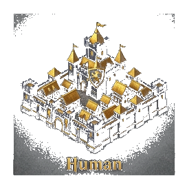
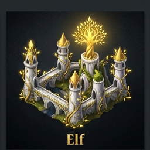
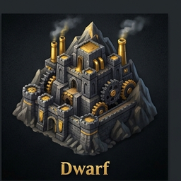
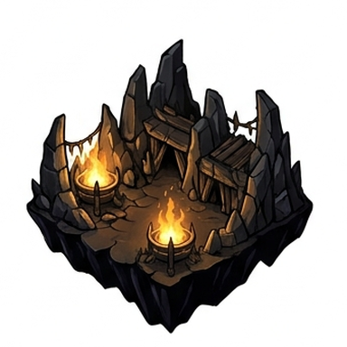
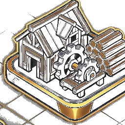
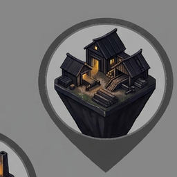
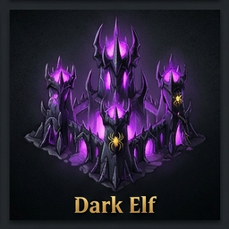
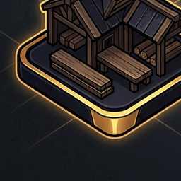
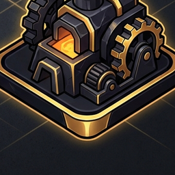
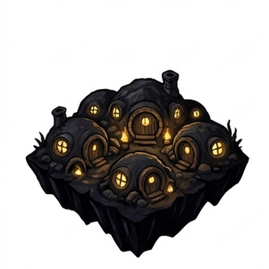
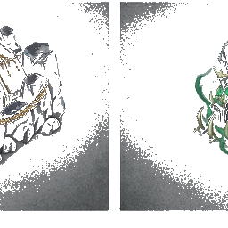
Sezgi'nin Stitch ipucu birebir uygulandı: Harita 1376×768 kap, her marker
position: absolute ile % bazlı koordinata yerleşti. CSS Grid YOK.
36 nokta eşit dağıtım: X = 7/22.6/38.2/53.8/69.4/85 %, Y = 12/26/40/54/68/82 %.
Marker tekniği: ikon width:120% (yuvarlağın dışına %20 taşar),
translateY(-10%) perspektif düzeltir, drop-shadow(0 12px 14px) ile
haritaya bütünleşir — Stitch yerle_im_rehberi.md talimatları.
Temiz arayüz: yan menüler kaldırıldı, üstte tek satır TopBar + altta minimal bilgi şeridi. Tüm odak 36 noktalı stratejik haritada. BG karartma overlay'i ile Stitch'in orijinal slot çizimleri arkada zayıfça gözükür (atmosfer), benim 6×6 düzgün grid'im önde.
Boş koordinatlar (5 adet): 97:23, 99:24, 101:23, 102:25, 102:27 — hiçbir marker yok, sadece BG manzarası görünür.
Hover'da: ikon büyür + yukarı kalkar (translateY -18% + scale 1.08), koordinat fade in, isim etiketi slide up, koloni'lerde altın +%bonus rozetı ortaya çıkar.
Karşılaştır: v2 (CSS Grid) · v3 (mevcut) · Şehir mockup